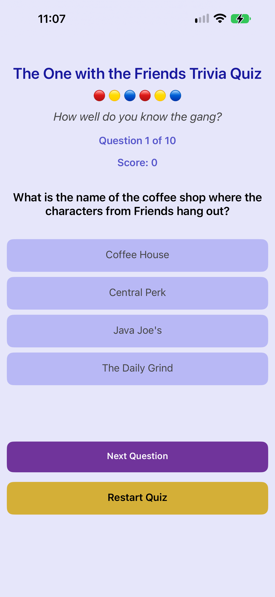
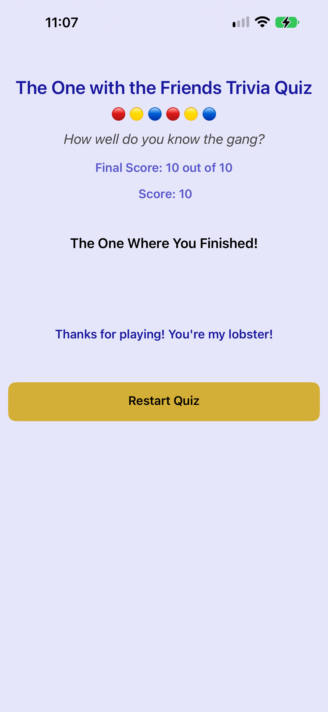

For this project, I transformed the Friends trivia quiz I originally created for Module 2 into an interactive mobile application using MIT App Inventor. This project allowed me to explore mobile application development, visual programming, interface design, and usability testing.
The One with the Friends Trivia Quiz
How well do you know the gang?
Test your Friends knowledge with ten interactive trivia questions, live scoring, humorous feedback, final results, and replay functionality.


Compatible with Android devices only. Installation may require permission to install applications from outside Google Play.
Development Process
I used MIT App Inventor's Designer to create the mobile interface and its Blocks editor to program the application's functionality. The quiz incorporates variables, lists, procedures, conditional statements, and button events to manage questions, answers, scoring, and navigation.
Testing and Usability
I tested the application on my iPhone using MIT App Inventor Companion. During testing, I refined the layout, adjusted button spacing, improved margins, and repositioned the title to create a more user-friendly experience.
I successfully tested the scoring system, answer feedback, question navigation, final results, and restart functionality. I then generated an Android APK for distribution.
Reflection and Future Development
This project helped me understand the relationship between programming logic, interface design, and the mobile user experience. In the future, I would like to explore randomized feedback, additional trivia questions, sound effects, and more advanced mobile application development.
This is an unofficial, fan-made educational project and is not affiliated with the Friends television series or its rights holders.